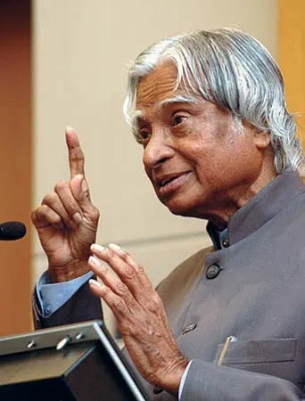

Tribute to A.P.J. Abdul Kalam

A.P.J. Abdul Kalam, the "Missile Man of India," was born on October 15, 1931, in Rameswaram, Tamil Nadu. He served as the 11th President of India and was a renowned scientist, known for his work in India's space and missile programs. In 2002, he was elected as the 11th President of India, earning the title of the "People’s President" for his approachable nature and dedication to the youth. Beyond his official duties, he was a prolific author and visionary who outlined a roadmap for national progress in his book India 2020.